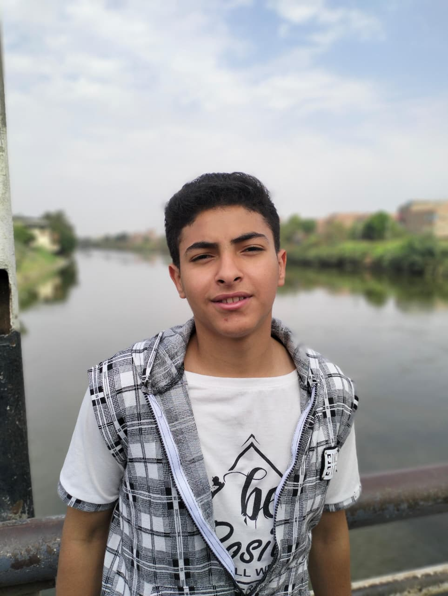

الأمن القومي المائي
في عالم يتزايد فيه التحدي المائي، لا تعتبر مراقبة جودة مياه نهر النيل والترع المصرية مجرد قضية بيئية، بل هي قضية **أمن قومي** بالدرجة الأولى. مشروع "حراس النيل" لا يهدف فقط إلى جمع البيانات، بل يهدف إلى توفير نظام إنذار مبكر فوري ودقيق لحماية صحة المواطنين وضمان استدامة الموارد الحيوية لمصر.
كيف يعمل النظام؟
1. الانتشار
يتم إطلاق سرب من "الحراس" (مستشعرات ذكية) لتطفو بحرية في النهر.
2. جمع البيانات
يقوم كل حارس بقياس مؤشرات جودة المياه (حرارة، عكارة، pH) وإرسالها فورًا مع موقعه الجغرافي.
3. التحليل الذكي
تستقبل خوادمنا البيانات، ويقوم "العقل اليدوي" و"العقل الذكي" (Gemini API) بتحليلها فورًا.
تفوقنا التكنولوجي: الدقة والسرعة
ما يميزنا عن الأنظمة التقليدية المتبعة في شركات الري والصرف الصحي هو اعتمادنا على تكنولوجيا حديثة تتفوق في أهم نقطتين: **الدقة الفائقة والسرعة الفورية.**
السرعة: تحليل في 3 دقائق
في عالم اليوم، التأخير في اكتشاف التلوث يعني تعريض صحة المواطنين للخطر المباشر.
الدقة: قياس مباشر (TDS)
دقة البيانات هي أساس أي قرار سليم. نحن لا نعتمد على التقديرات، بل نقيس الحقائق مباشرة.
الفريق
بلال محمود سيد
مؤسس المشروع والمطور الرئيسي

أحمد يحي ثابت
مؤسس المشروع والمطور الرئيسي